Nuestra alternativa es y será contundente , pero basada en la responsabilidad , en la propuesta constructiva y en el convencimiento de la necesidad de un cambio de estilo que beneficiará a todos.
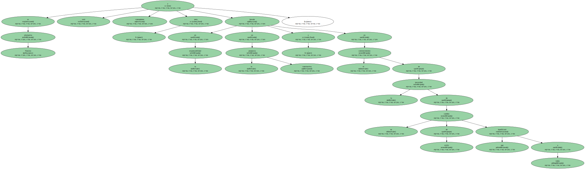La sexta legislatura parlamentaria desde el restablecimiento de la democracia empezó con la esperanza y también con el convencimiento de que esta vez las actitudes de consenso y de diálogo saldrían adelante , por encima de otras actitudes.
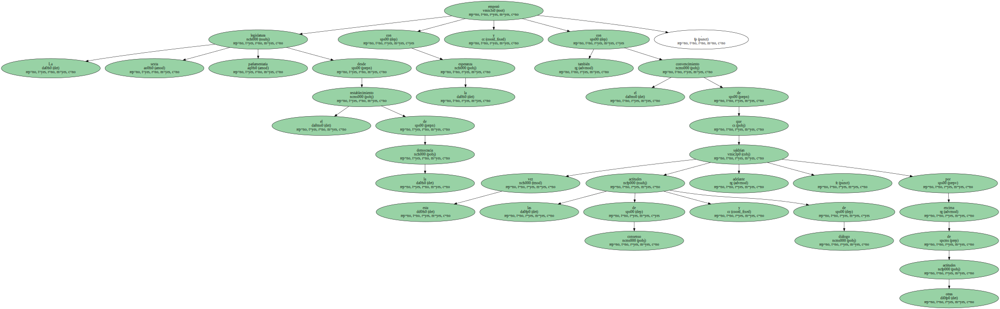Levantar la dignidad de la vida parlamentaria y hacer que el Parlament sea el centro neurálgico de la política catalana , más abierto a los ciudadanos y más fructífero en sus decisiones legislativas , era y sigue siendo uno de los objetivos del grupo PSC-Ciutadans pel Canvi , y creemos que también , sinceramente , de los demás grupos.
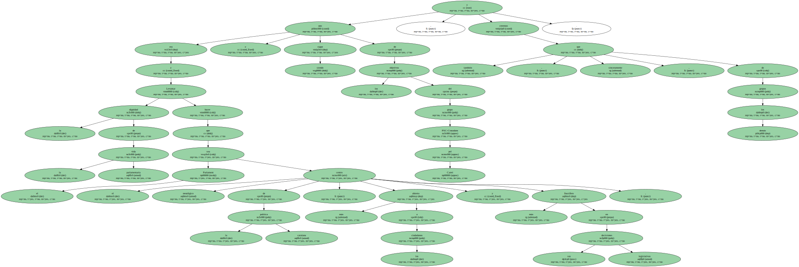Entiendo que en las elecciones del 17 de octubre de 1999 los ciudadanos y ciudadanas , con sus votos mayoritarios pero no suficientes para que nuestra opción pudiera gobernar , estaban pidiendo un cambio de estilo , de tono y de actitud , que podría resumirse con estas palabras : " No queremos que gobernéis todavía , pero sí queremos que tengáis la suficiente fuerza parlamentaria para propiciar otra manera de hacer las cosas ".
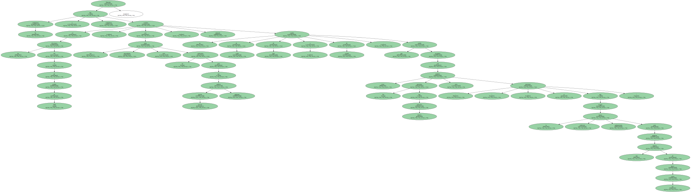Este es el mandato que nosotros interpretamos que recibíamos y que , sin pérdida de tiempo , me dispuse a impulsar desde el Parlament.
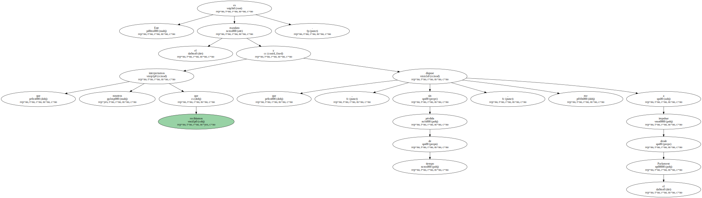Por eso me instalé en el edificio del Parc de la Ciutadella de Barcelona.
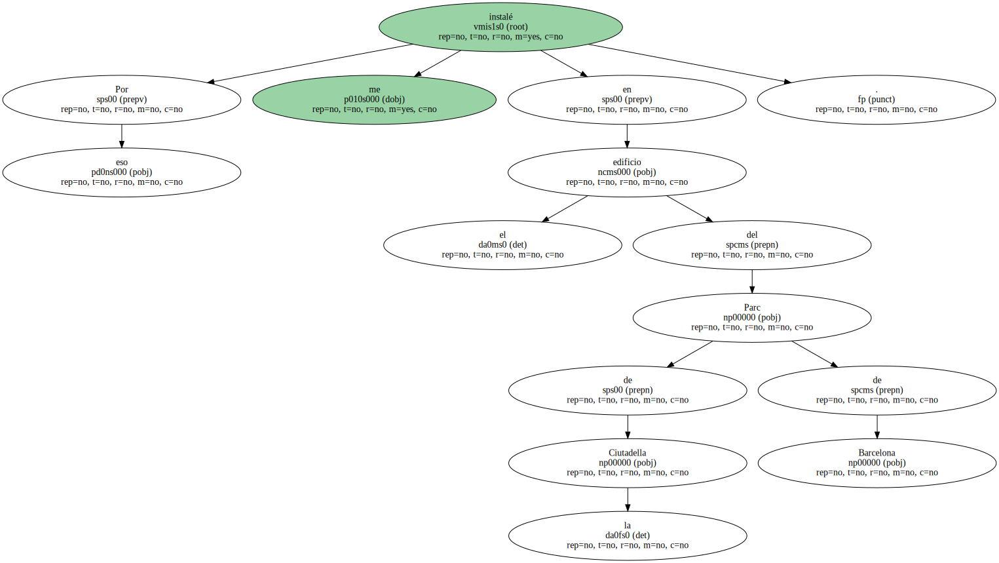Parece lo más normal que el líder de la principal alternativa de gobierno , que está al frente de un grupo de 50 diputados ilusionados y con ganas de trabajar , tenga despacho en la propia Cámara , que es donde se tienen que decidir las prioridades legislativas.

Pero eso que parecía lo más normal se ha visto que no lo era , porque incluso los medios de comunicación lo convirtieron en noticia.
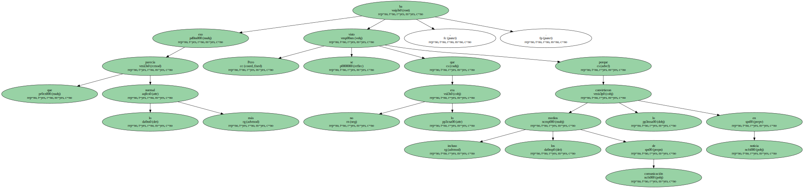Las instalaciones del edificio del Parlament no están preparadas para la labor cotidiana de 50 diputados ni para las propias del presidente del grupo.
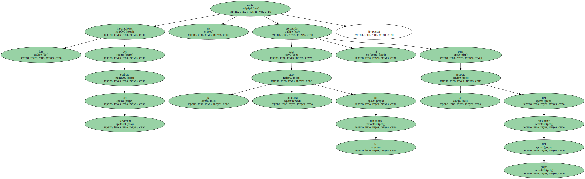Y no es sólo una cuestión de espacio físico.
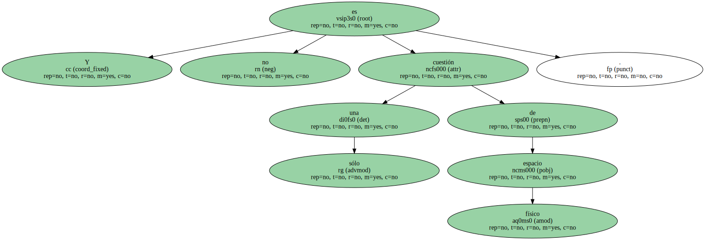Dotar al Parlament de mayores condiciones logísticas para trabajar significa dotarlo también de mayores condiciones políticas para que sea más ágil y más activo en lo que debe ser su función.
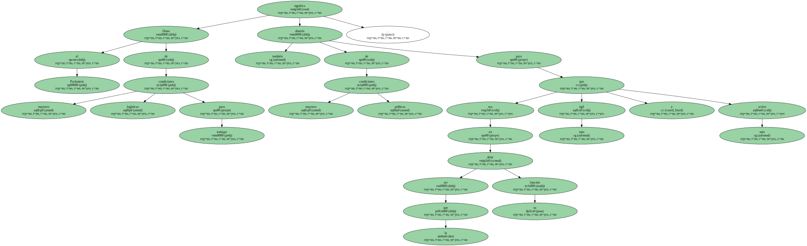El talante abierto y predispuesto que el presidente del Parlament , Joan Rigol , ha mostrado desde el primer momento para dignificar la vida parlamentaria contrasta con el talante que sólo en dos meses de legislatura ha expresado en ocasiones reiteradas el president de la Generalitat.

La lógica discrepancia política no está reñida con el consenso y el diálogo.
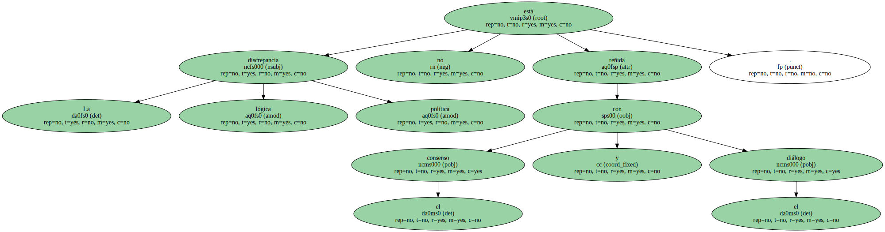Todo lo contrario.
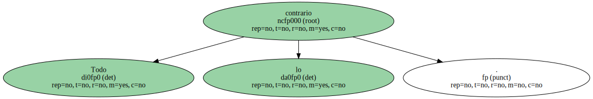Avanzaremos más si desde posiciones que pueden ser discordantes buscamos acuerdos para no atascar propuestas o decisiones.
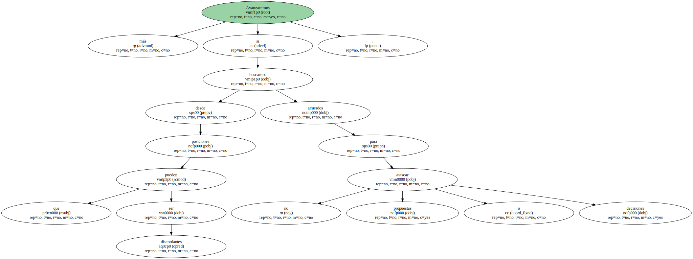Este es y será nuestro lema , y éste nuestro modo de actuar.
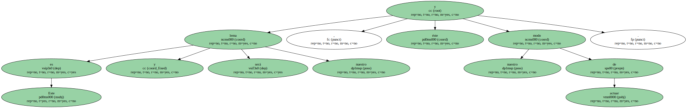En mi primera intervención en el Parlament , el día del debate de investidura , ofrecí al president de la Generalitat Jordi Pujol mi disponibilidad a entendernos desde la exigencia mutua , desde la diferencia y desde la mutua oposición.
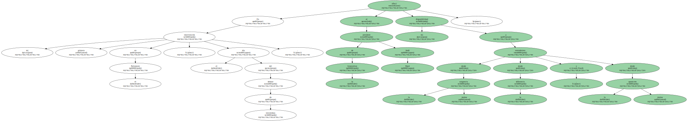Hicimos un esfuerzo desde los grupos de la oposición durante el debate sobre los medios de comunicación públicos para consensuar medidas que podían parecer imposibles de acordar.
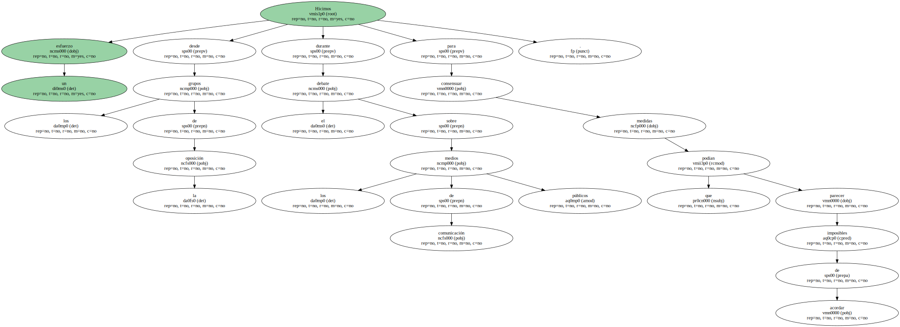Fue un primer paso.
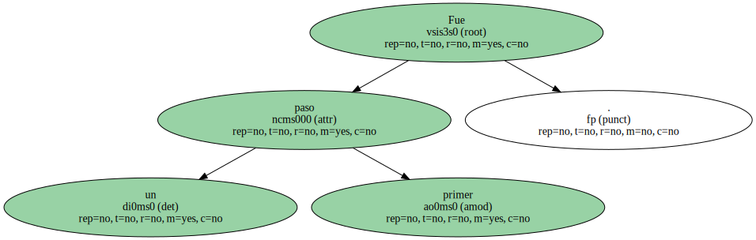Y me consta que fue el conseller de la Presidència Xavier Trias quien jugó un papel significativo dentro de su grupo para que se pudiera producir este primer paso.
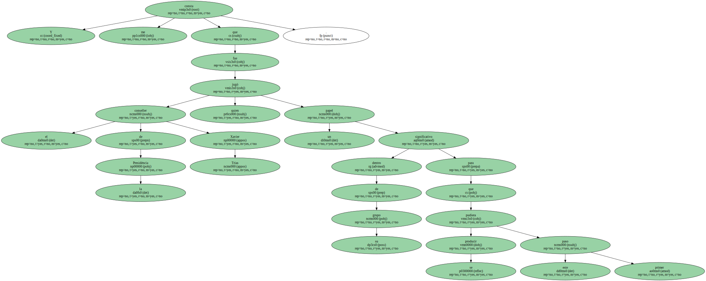Los condicionantes que Convergència i Unió tiene con el Partido Popular , como ya se ha visto de sobras , han hecho que se rompieran o bloquearan en las últimas semanas otros posibles acuerdos , como por ejemplo la celebración del pleno del Parlament que tenía que nombrar a los miembros del consejo de administración de la CCRTV y encarrilar la discusión del Presupuesto para el 2000.
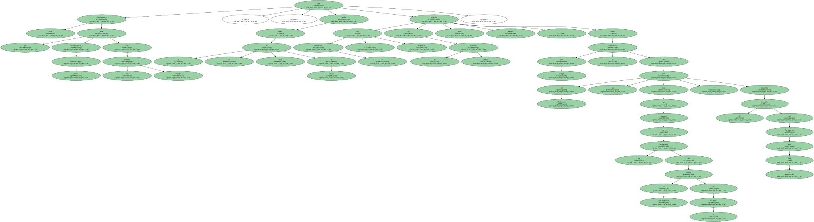No quería volver a referirme al desprecio , en algunos casos rozando los límites de la corrección política , con que el president Pujol contestó a las preguntas de los diferentes grupos , también a la del PP , en el pleno ordinario del día 22 de diciembre.
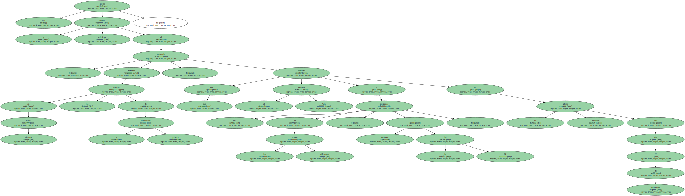Pero a nuestra oferta de acuerdo referente al Presupuesto , el president contestó de nuevo con descalificaciones personales.
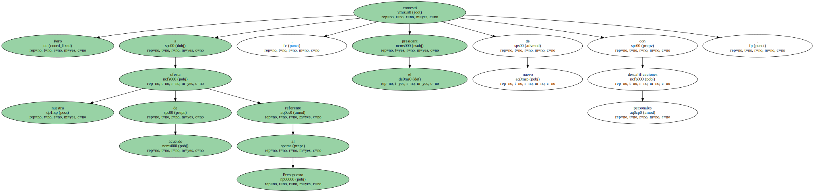Esta no es la forma de dignificar la política ni de dignificar nuestro Parlament.
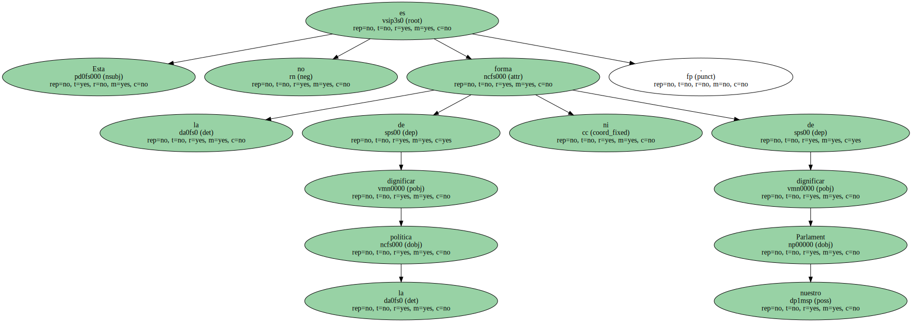¿ Cómo podrán los ciudadanos y ciudadanas creer que existe otra forma de hacer política y tener confianza en sus representantes si adoptamos la descalificación personal como norma ?.
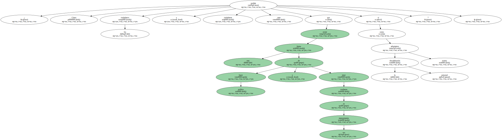Nosotros no bailaremos este baile.
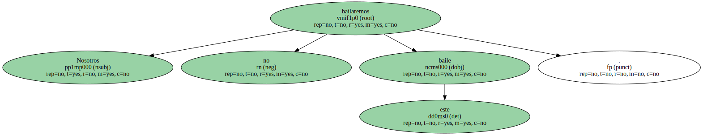Nuestra alternativa es y será contundente , pero basada en la responsabilidad , en la propuesta constructiva y en el convencimiento de la necesidad de un cambio de estilo que beneficiará a todos.

Catalunya está descubriendo - - y nosotros también , lo confieso - - que se puede influir tanto o más desde el Parlament como desde el Govern.
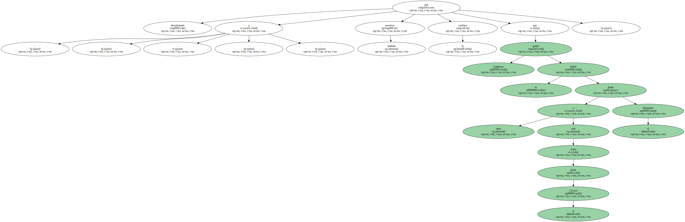Nos dedicaremos a ello.
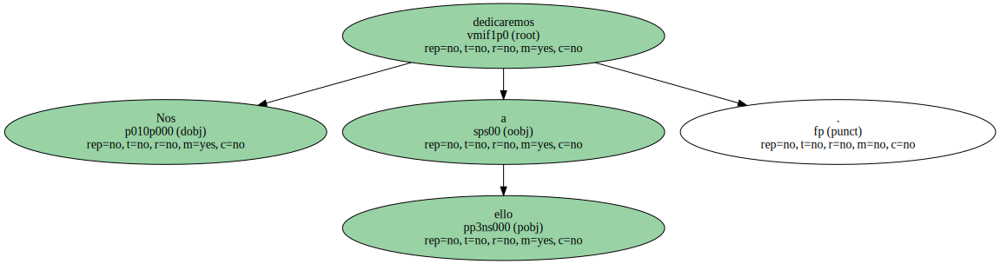En el año 2000 los catalanes comprobaran cómo el Parlament es su representante.
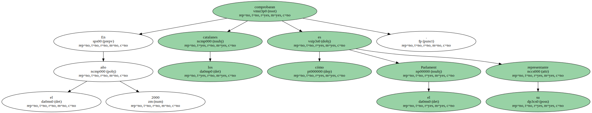